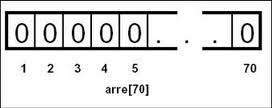

Estructuras de Datos
Arreglos
Un arreglo(vector, array, matriz) es un conjunto de datos o una estructura de datos homogéneos que se encuentran ubicados en forma consecutiva en la memoria RAM (sirve para almacenar datos en forma temporal).
Definicion
Un arreglo puede definirse como un grupo o una colección finita, homogénea y ordenada de elementos. Los arreglos pueden ser de los siguientes tipos:
- De una dimension
- De dos dimensiones
- De tres o mas dimensiones
Tipos de Arreglos
- Arreglos unidimensionales
- Arreglos Multidimensionales
- Arreglos de multiple subindices
Arreglos unidimensionales Es un tipo de datos estructurado que está formado de una colección finita y ordenada de datos del mismo tipo. Es la estructura natural para modelar listas de elementos iguales. Están formados por un conjunto de elementos de un mismo tipo de datos que se almacenan bajo un mismo nombre, y se diferencian por la posición que tiene cada elemento dentro del arreglo de datos. Al declarar un arreglo, se debe inicializar sus elementos antes de utilizarlos. Para declarar un arreglo tiene que indicar su tipo, un nombre único y la cantidad de elementos que va a contener. Arreglos multidimensionales Es un tipo de dato estructurado, que está compuesto por dimensiones. Para hacer referencia a cada componente del arreglo es necesario utilizar n índices, uno para cada dimensión. El término dimensión representa el número de índices utilizados para referirse a un elemento particular en el arreglo. Los arreglos de más de una dimensión se llaman arreglos multidimensionales. Arreglos con multiple subindices Es la representación de tablas de valores, consistiendo de información arreglada en renglones y columnas. Para identificar un elemento particular de la tabla, deberemos de especificar dos subíndices; el primero identifica el renglón del elemento y el segundo identifica la columna del elemento. A los arreglos que requieren dos subíndices para identificar un elemento en particular se conocen como arreglo de doble subíndice. Note que los arreglos de múltiples subíndices pueden tener más de dos subíndices. El estándar ANSI indica que un sistema ANSI C debe soportar por lo menos 12 subíndices de arreglo.
Operaciones con arreglos
Las operaciones en arreglos pueden clasificarse de la siguiente forma:
- Lectura: este proceso consiste en leer un dato de un arreglo y asignar un valor a cada uno de sus componentes
- Escritura: Consiste en asignarle un valor a cada elemento del arreglo.
- Asignación: No es posible asignar directamente un valor a todo el arreglo
- Actualización: Dentro de esta operación se encuentran las operaciones de eliminar, insertar y modificar datos. Para realizar este tipo de operaciones se debe tomar en cuenta si el arreglo está o no ordenado.
- Ordenación.
- Búsqueda.
- Insertar.
- Borrar.
- Modificar.